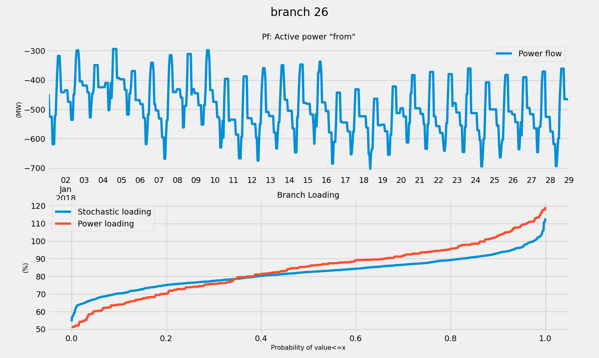

🎳 Clustering
In VeraGrid you can perform a clustering simulation. This will create a ClusteringResults object that we can “recycle” to run other time series simulations.

For instance, if we have a yearly (8760h) profile, and we run a 400h cluster, then when running a time series power flow with clustering, you will only simulate 400 time steps, and then the results will be expanded to 8760 time stamps afterward using the clustering information.
The clustering activation button is next to the clustering run button in the simulations buttons ribbon or the simulations menu.
Registered Result Properties
ClusteringResults registered properties
The clustering result stores the representative time-step selection used by time-series reductions.
Property |
Type |
Description |
|---|---|---|
|
|
Time indices represented by the result object. |
|
|
Probability assigned to each sampled or clustered time step. |
|
|
Map from expanded time steps to the selected clustered samples. |
API
The following is an example of how to use the clustering in conjunction with a time series simulation programmatically.
import VeraGridEngine as vg
# import some grid with time series
grid = vg.open_file("IEEE39_1W.veragrid")
# run a clustering analysis
cl_options = vg.ClusteringAnalysisOptions(n_points=200)
cl_drv = vg.ClusteringDriver(grid=grid, options=cl_options)
cl_drv.run()
# run a time series simulation, using the clustering information
pf_options =vg.PowerFlowOptions()
pf_ts_driver = vg.PowerFlowTimeSeriesDriver(
grid=grid,
options=pf_options,
clustering_results=cl_drv.results
)
pf_ts_driver.run()
pf_res: vg.PowerFlowTimeSeriesResults = pf_ts_driver.results
Observe that by passing the clustering_results argument
to the driver, it will automatically run the time steps
given by the clustering and expand the results after the simulation.
Cool, right?
Theory
Either in power systems markets, or centralized dispatch, the “dispatcheable” generation reacts to the non-dispatcheable injections (Load + non-manageable renewable generation) Hence, we can assemble a matrix of profiles with T time steps and Load + non-dispatcheable generators as columns. This data represents the behaviour of the grid, since any later dispatch would be just a reaction to the a-priori data.
Running a simple k-means clustering over this matrix, we can readily obtain the cluster centers. The cluster center are new points that did not exist in the original data matrix. It would be mathematically correct, to simulate the cluster centers and report back those results. However, less technified users would freak out.
So, in order for people not to lose their marbles, we adapt the cluster centers to the closest original data point. In this fashion we can find which indices of the original time series, represent better the mathematical cluster centers. From that, we compute the probability of each original time step for later expansion of simulated results with the adapted cluster centers.
This has proven to work well enough in practice, yielding similar cumulative density functions as the probabilistic power flow (in the case of power flow with clustering)
